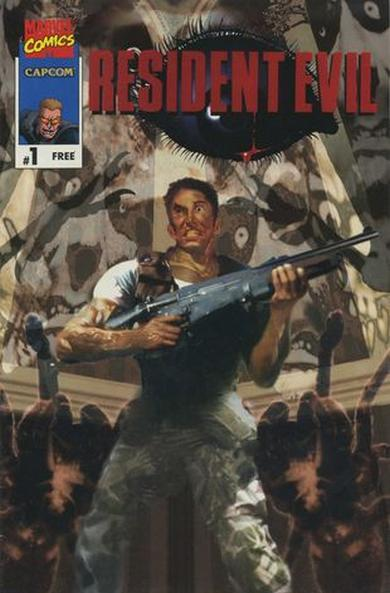
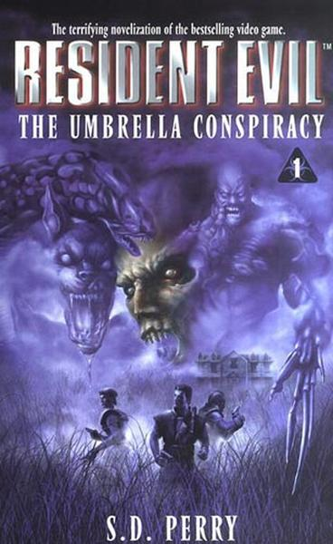

Resident Evil, known as Biohazard or Baiohazādo in Japan, is a survival horror video game-based media franchise created by Shinji Mikami and Tokuro Fujiwara and owned by the video game company Capcom. The franchise focuses around a series of survival horror video games, but has since branched out into comic books, novels, novelizations, sound dramas, live-action films, animated sequels to the games, and a variety of associated merchandise, such as action figures. The series' overarching plot focuses on multiple characters, and their roles in recurring outbreaks of zombies and other monsters, initially due to the release of the T-virus, but still more biological weapons over time, created mainly by the fictional Umbrella Corporation and various other organizations in later games.
Video Game:
The eponymous first game in the series was released in 1996 as a survival horror video game, taking place in a mansion in the woods hiding a secret underground laboratory owned by a well-known pharmaceutical corporation, but the franchise has since grown to encompass other video game genres and storylines. The series is a mix of action and horror film-inspired plotlines, exploration, and puzzle solving. It is Capcom's biggest franchise in terms of software sales, with over 82 million units sold worldwide (as of December 31, 2017), with the series spanning into every form of media from games to a film series spanning 6 live action films and 4 CGI films.
The main storyline of the games primarily concern a group of individuals who battle against the Umbrella Corporation as well as characters in relation to them who have developed the T-virus which, among other things, can transform humans into zombies as well as mutate other creatures into horrifying monsters.
Movie:
Resident Evil, a 2002 action horror film written and directed by Paul W. S. Anderson and produced by Bernd Eichinger and Jeremy Bolt. The film stars Milla Jovovich and Michelle Rodriguez. It is the first installment in the Resident Evil film series, which is loosely based on the Capcom survival horror video game series of same name. Alongside Jovovich and Rodriguez, it also stars Eric Mabius, James Purefoy, Martin Crewes, and Colin Salmon.
Borrowing elements from the video games Resident Evil and Resident Evil 2, the film follows amnesiac heroine Alice and a band of Umbrella Corporation commandos as they attempt to contain the outbreak of the T-virus at a secret underground facility. The film received mixed reviews from critics but some highly praised Jovovich and the cast performances as well as the action sequences and the zombies design. It was a box office success, grossing more than $100 million worldwide.
Comics:

Cover: Bill Sienkiwicz
Publisher: Marvel Comics
Novels:

Writer: S.D. Perry
Publisher: Pocket Books (Simon & Schuster (CBS))